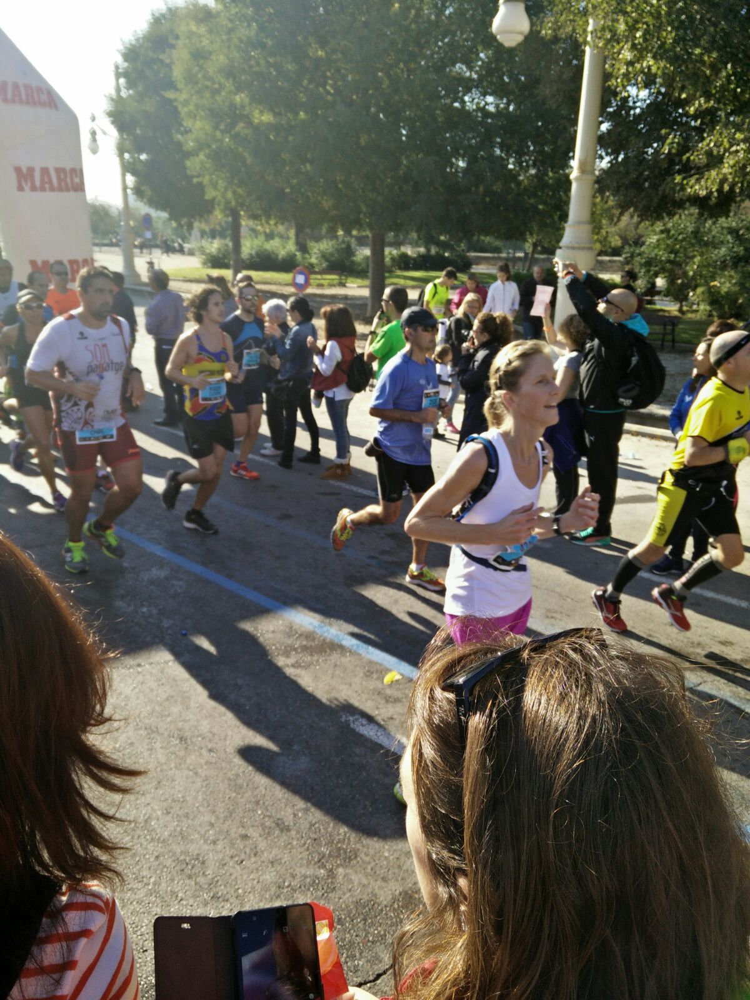

Valencia marathon
november 2015
42 jaar en een paar maanden
Om 6.15 uur gaat de wekker. Maar eigenlijk ben ik al de hele nacht wakker. In bed lig ik met een grote glimlach, wat heb ik het Spaanse gemist. Het geroezemoes op straat, deze mooie nieuwe stad, de vrolijke mensen. Even spanning met alle regeldingetjes maar eenmaal op straat ebt dat snel weg. De disco’s gaan uit en de bezoekers bijten gretig in een pizza. De bus gaat anders dan verwacht en met 2 nieuwe Spaanse vrienden delen we een taxi. Direct is er leuk contact en wensen we elkaar 'suerte'. Tomas staat voor me in de rij voor het mobiele toilet. Lief, zo lang mogelijk blijven zitten….
Voordat ik er erg in heb is het al 9 uur en wandelen we rustig het startvak uit. Langs alle grootse gebouwen van Calatrava. Los! Wat voelt dat goed.
Ik vind een vast tempo op 5 min/km. Prima voor nu. Lekker met 13 graden… Als de temperatuur zo stijgt kan het altijd een tandje terug. Op naar het strand. Opa en oma staan in badjas voor hun lage strandwoning aan te moedigen. Lief gezicht. De brandweer spuit ons nat. ‘Ja! Doe maar…’ in de loop van de ochtend wordt het 23 graden… Op 5 km m’n eerste water uit de rugzak en op 10 m’n eerste gelletje. Dat gaat lekker. Hey? Het tempo blijft 5… Dat betekent 3.30u als eindtijd. Nee, niet realistisch, maar lekker lopen doe ik wel in dat vaste ritme. Cadans gevonden. ‘Gewoon’ zo doorlopen dus… Wat leuk al die Spaanse aanmoedigingen! 'Venga guapa! Va bien! Campiones! Andale!' En intussen wordt er ook nog aardig gekeuveld om me heen.

Op 17 km vind ik Tomas, die al had aangekondigd op die mooie boulevard te zijn. Een grote lus en op 26 km mag ik weer vrolijk naar hem zwaaien. Door. Langs keramieken gevels, stadspoorten en de oude binnenstad. Ik zie een winkeltje waar ik morgen heen wil. Focus;-) vanaf 30 beginnen mensen te wandelen en hoor ik de eerste vloeken… ‘Kom op nog maar 12’, prent ik mezelf in. Ik twijfel over n 4e gelletje. Besluit op 34 voor een dextrootje met veel water te gaan. Slecht plan… Ik ren naar de kant en verschuil me voor een pitstop achter een grote boom op een grasveldje;-(
De lol is er even helemaal af en m’n tempo eruit;-( Moet mezelf echt motiveren… ‘Voel ik niet ook iets geks in m’n been? Is m’n loophouding eigenlijk wel goed?’ Gelukkig rijdt een geluidswagen met goede hippe muziek achter me aan. En blijven de mensen langs de kant ontzettend enthousiast. M’n mondstuk valt van m’n rugzakje en m’n horloge blijkt uit. ‘Grmbl…’ Gelukkig is daar het station en de stierenvechtersarena. ‘Kom op meid, dit is jouw marathon’.
De laatste verklede fallassupporters. En dan 1 grote mensenmassa die ons heel natuurlijk de ruimte geeft en een heleboel herrie maakt. Calatrava in zicht! Ik heb mijn tempo 2 gevonden en draai het Turiapark in. Lopers zwepen het publiek verder op en ik trek een eindsprint over de blauwe loper midden door het witte water. 3:39 op de finishklok. Een beetje leeg over de streep. 'Gaat het?, vraagt een vrijwilliger. En dan pas realiseer ik me wat heb gedaan.
'Si!'' Roep ik volmondig en schiet even vol terwijl ik doorloop. Wat was dat een mooie tocht!
Voorlopig alleen maar nagenieten. Eerst in de zon op balkon. Wat ging dat lekker! Steeds bijna in trance. Het tegengestelde van m’n eerste in Spijkenisse door leeg boerenslingerlandschap maar even zo fijn.
In Nederland natuurlijk de marathonsite gecheckt: 3:35:06 netto…positieve shock! Dat is een tijd waarmee ik netto tweede Nederlandse dame bij de Veteranen B ben. Toch leuk in zo’n loopje met meer dan 17.000 deelnemers:-) Als ik nooit meer een marathon loop – want toch aardig ingewikkeld voor mij met aangepast eten – is dit iets waar ik altijd trots op zal zijn. En meer mensen met mij. Ontzettend leuk hoe iedereen meegeleefd heeft! Zonder al die mensen was het nooit zo’n warme ervaring geweest.
Reacties
Voeg een reactie toe.